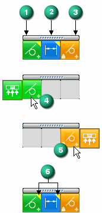

Managing face relationships in Solution Manager
In Solution Manager mode, only faces that are relevant to the solution display in color. The nonparticipating faces are transparent. Right-clicking a colored face displays a relationship palette listing all relationships to the face.

Relationship palette
Columns
-
Found relationships (1). These are the detected relationships that are turned on in the Advanced Design Intent panel.
-
Dimensional constraints (2)
-
Persisted relationships (3)
You can turn off (suppress) the relationship to all faces by clicking the found relationships button. This is handy if there are numerous faces to control. You can turn them all off and then selectively turn on the faces that are to participate in the synchronous edit.
Hovering over a relationship on the palette (4, 5) exposes a fly out option. Use the fly out option to suppress a single face.
The yellow triangle (6) on a relationship denotes that the relationship contributes to a failed solution.
For Coplanar, Aligned Holes and Symmetric relationships, you can hover over the relationship in the palette to highlight the symmetry or axis plane.